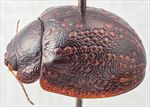
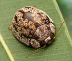
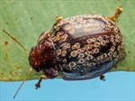
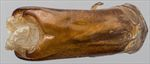
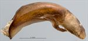
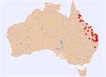

Click on images to enlarge

Female, Mt Crosby, S.E. Queensland

Male, Maryborough, S.E. Queensland

Female, Mt. Garnet, North Queensland

Aedeagus, dorsal view (Double Island Point, S.E. Queensland)

Aedeagus, lateral view (Double Island Point, S.E. Queensland)

Distribution (pale-coloured circles indicate records obtained from iNaturalist)
Ta39
Name
Trachymela echo (Blackburn)
Reference specimen
2006-062b, Double Island Point, SE Queensland.
Adult Description
Length: ♂ 8.7–10.1 mm (n=23), ♀ 9.1–11.2 mm (n=50).
Colouration:
Head: uniformly mid- to dark brown with black-tipped mandibles, rarely with slightly darker areas, these most often fringing the sutures; antennomeres 1–11 uniformly straw- to light brown, rarely with the distal antennomeres having vaguely darker infuscation.
Pronotum: brown, concolorous with head, sometimes with irregular, slightly darker maculations in the area behind eyes.
Scutellum: uniformly brown, of a slightly darker shade than that of the adjacent area of pronotum.
Elytra: brown, of a similar or slightly darker shade as pronotum, with a large number of discrete, relatively large (5–12× pd) and approximately round verrucae of a lighter brown colour, arranged in roughly longitudinal series on disc, with a merged band of these lighter-coloured verrucae along edge of disc; humeral callus concolorous with discal interstices.
Venter & Legs: mid- to dark brown, generally darker around mid-ventrites; legs fractionally lighter in shade; inside surface of elytral epipleura brown.
Cuticular Wax: greyish in colour, very unevenly distributed on head and pronotum with some very dense patches often present; distribution on elytra concentrated as rings around the margins of the elytral verrucae with only a sparse scatter elsewhere; scutellum and a relatively large area around elytral summit completely free of cuticular wax.
Morphology:
Head: punctures variable, usually quite large (pd ≈ 2× ef) and relatively evenly and quite densely distributed, rarely partially obliterated by rugose interstices, rarely smaller and more evenly distributed; antennae long (AL/BL: ♂ 50–54%, ♀ 41–43%), filiform.
Pronotum: almost evenly curved transversely, with a broad but very shallow depression situated behind the outside edge of each eye; puncturation usually clearly impressed, rarely much less so, quite evenly distributed and moderately dense in discal area, becoming much coarser at lateral margins; much finer punctures scattered very unevenly among the larger ones; front margins join lateral margins in a smoothly rounded right-angle, with lateral margin curving smoothly and gradually towards rear margin.
Scutellum: lightly punctured over anterior half, unpunctured in posterior half, with punctures smaller (rarely similar in size) than those on adjacent area on pronotum, rarely completely unpunctured.
Elytra: surface evenly curved; punctures small to medium-sized, distinct anteriorly, becoming less so in posterior third, and relatively evenly distributed between verrucae, with a scattering of much finer punctures on interstices; 9 longitudinal rows (VR1 is very short, VR2, VR3, and VR6 usually extend almost to apex) of large, raised, roughly round verrucae, many with a fine central puncture, are present on disc; elytral suture carinate in posterior third; surface continuous under humeral callus; vertical extension of epipleura considerable (HCE/PW = 0.37–0.40).
Venter: prosternal process almost parallel-sided, open or lightly closed anteriorly, short setae usually present at rear of prosternal process and scattered over its length, present also (rarely absent) from mesoventrite; three or more long setae on anterior, median, and posterior trochanter; front edge of metaventrite beveled, truncate; inner edge of epipleurae lacking setae.
Male Genitalia (Aedeagus):
Dimensions: quite small (LPE/BL = 28–32%).
Dorsal view: shaft almost parallel-sided for most of length, then broadening noticeably near apex before the sides converge towards apex in a smooth arc; dorsal surface smoothly curved with faint dorso-median channel usually present; tip barely protruding; ostium large and approximately round.
Lateral view: shaft quite thick, almost evenly curved throughout its length, thinning towards apex over 20% of length; tip slightly reflexed, thin and spout-like; flagellum thin and usually broken off in specimens.
Immature Stages
Eggs: 2.3 × 0.96 mm, yellow-green, with rough, reticulated surface. Laid in batches of 8–14 eggs, cemented side-by-side to substrate along one edge.
Larvae: L3/L4: Head light brown, with a dense scatter of black spots. Pronotum also light yellow-brown, scattered with black spots, with 2 prominent, large, almost rectangular patches, one on either side of the central longitudinal line, with the shorter side of rectangle against rear margin of pronotum. Rest of thorax and abdomen mainly reddish-brown, with many lighter-coloured patches. Black tubercles large and prominent. Shape of larva similar to those of Ta13, with naturally expanded mid-abdominal segments.
Similar species
Ta134: a species that is very similar, with smooth verrucae essentially identical in position and size to those of Ta39, but individuals of both sexes tend to be smaller; distributed in north-western Australia.
Ta40: shares with Ta39 the rows of round, smooth verrucae on the elytra that are of a paler shade than the surrounding interstices, but in Ta40 these are always considerably smaller in size.
Notes
Taxonomy: Ta39 is identified as Trachymela echo from Blackburn’s description and type locality. It is a somewhat unusual member of the catenata-group of species, sharing similar egg-laying behavior and having larvae that are like those of Ta13 and Ta26.
Distribution & Abundance: The species is quite widespread and relatively abundant in eastern Queensland.
Host Associations: Mostly found on bloodwood species, including Corymbia intermedia (n=10) and C. erythrophloia (n=4). There are also two records from the ghost gum Blakella tessellaris, although it is possible that some of the 14 records from unspecified Corymbia species may also be from Blakella. There are 2 records from Angophora and a single occurrence on Eucalyptus tereticornis, with the latter likely incidental.
Population Structure: The sex ratio is strongly female-biased, with 70% of 76 specimens examined being female (p < 0.01 using an exact binomial test).
Copyright © 2026. All rights reserved.
{kind=link}
{kind=link}
{kind=link}
{kind=link}
{kind=link}
{kind=link}